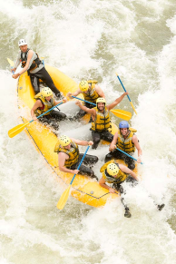

White Water Rafting
The core goal of Whitewater rafting is to navigate the river safely and successfully, using teamwork and skill to conquer the challenging rapids. Beyond navigation, the goal is to provide an exhilarating, adrenaline-filled recreational experience while connecting participants with the natural beauty of the river environment. The primary goal of whitewater rafting is to provide a thrilling and memorable recreational adventure by successfully navigating a turbulent river. This requires effective teamwork among all crew members and precise technical skill from the guide to manage the raft through the challenging currents, drops, and obstacles of the rapids. Fundamentally, the overarching goal is safety, ensuring that the entire party completes the trip unharmed while fully appreciating the exhilarating forces of nature and the scenic wilderness that defines the river journey.